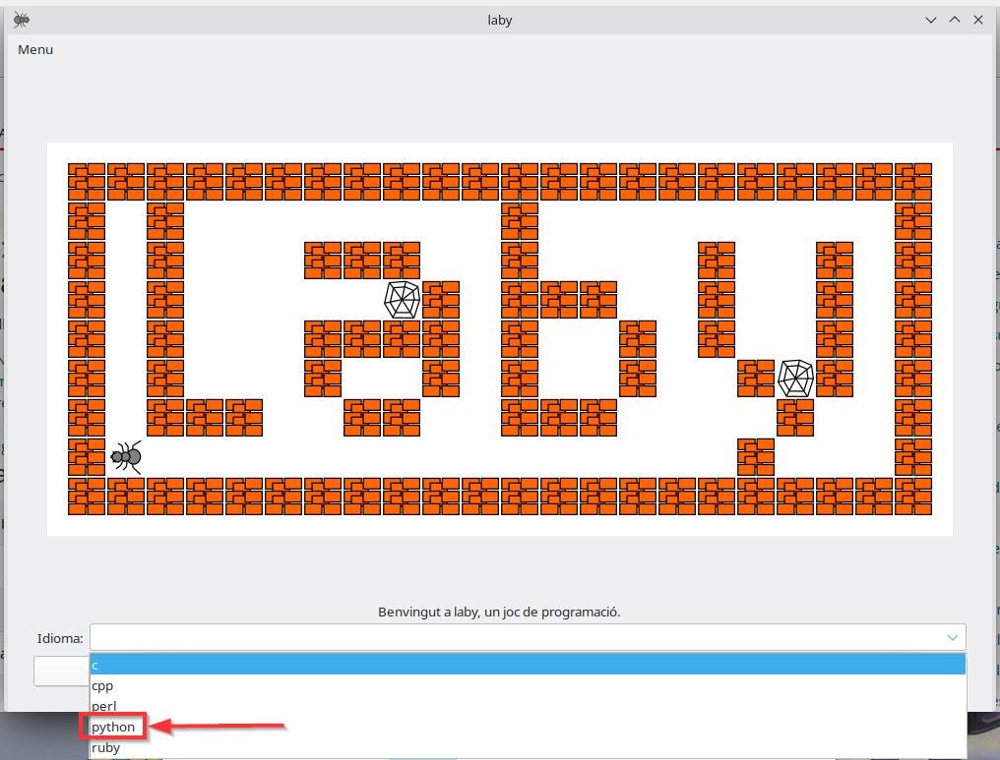
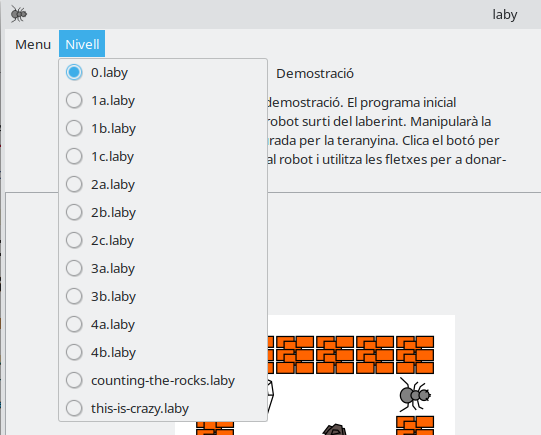
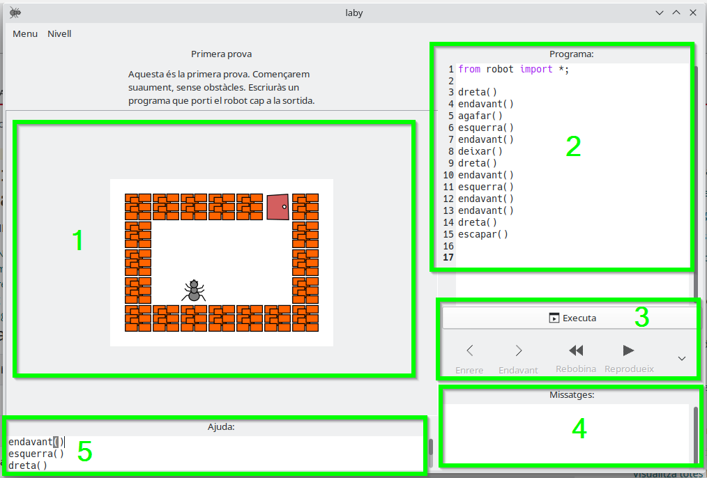

Actividad 3. Entrenando hormigas. 3 primeros niveles de Laby
En LliureX tenemos un juego que nos permite practicar el pensamiento computacional en cuanto a términos de algoritmia; es decir, las instrucciones que debemos especificar para resolver un problema concreto.
Este juego se llama Laby, y lo puedes encontrar en el menú de aplicaciones de LliureX, en la categoría “Pensamiento Computacional”.
Información importante
1. Al abrir Laby, debes seleccionar el lenguaje de programación que utilizaremos. En este caso, escoge python

2. Puedes seleccionar y cambiar de nivel desde el menú de “Nivell”

En esta actividad tienes el reto de superar los 3 primeros niveles de este juego (1a, 1b y 1c).
-> El nivel 0 es una demostración. Puedes utilizarlo para practicar y revisar el programa que nos dan de ejemplo.
3. La interfaz del juego se compone de 5 áreas:
- Área 1: es el juego en sí. La hormiga se moverá en base a las instrucciones que le demos en el programa (área 2).
- Área 2: es el programa. Aquí deberemos introducir las instrucciones que queremos darle a la hormiga (es decir, el algoritmo o programa). Las posibilidades son:
- Valenciano:
dreta(),esquerra(),endavant(),agafar(),deixar()oescapar() - Castellano:
derecha(),izquierda(),avanzar(),tomar(),dejar()oescapar()
- Valenciano:
- Área 3: son una serie de botones que permiten ejecutar el programa; es decir, que las instrucciones se manden al juego, y la hormiga empiece a seguirlas.
- Área 4: aquí veremos mensajes, tanto de éxito como de error en caso de que estemos ejecutando instrucciones que sean incorrectas o inválidas.
- Área 5: tenemos una ayuda donde nos indican las instrucciones aceptadas por el programa

Tareas
En esta actividad tienes el reto de superar los 3 primeros niveles de este juego (1a, 1b y 1c).
Entrega
Debes enviarme una captura de pantalla de cada nivel, donde se vea cómo lo has superado y las instrucciones que has especificado para superarlo.
EN LA CAPTURA DE PANTALLA TAMBIÉN DEBE VERSE EL NOMBRE DE USUARIO DEL ORDENADOR UTILIZADO.
Para hacer capturas de pantalla puedes utilizar el programa Shutter.